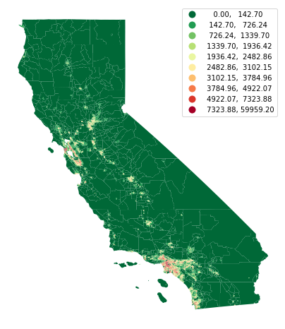
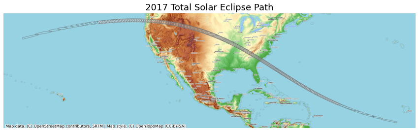

Mapping and Data Visualization with Python (Full Course Material)
A comprehensive guide for creating static and dynamic visualizations with spatial data.
Ujaval Gandhi

Introduction
This is an intermediate-level course that teaches you how to use Python for creating charts, plots, animations, and maps.

Get the Data Package
The code examples in this class use a variety of datasets. All the required datasets and Jupyter notebooks are supplied to you in the python_foundation.zip file. Unzip this file to a directory - preferably to the <home folder>/Downloads/python_dataviz/ folder.
Not enrolled in our instructor-led class but want to work through the material on your own? Get free access to the data package
Installation and Setting up the Environment
This class requires installing Anaconda and creating a new environment named `python_dataviz. Please review the Anaconda Installation Guide for step-by-step instructions.
Once you have created and activate the python_dataviz environment, install the following packages from the conda-forge channel.
geopandasrasteriomatplotlibjupyterlabxarraycontextilycartopy
Open the command prompt/terminal and run the following conda commands for installation.
conda create --name python_dataviz
conda activate python_dataviz
conda install -c conda-forge geopandas rasterio matplotlib jupyterlab xarray contextily cartopy -yOpen the notebook named 01_matplotlib_basics.ipynb.
Matplotlib Basics
Before we start using matplotlib inside a Jupyter notebook, it is useful to set the matplotlib backend to inline. This setting makes the matplotlib graphs included in your notebook, next to the code. Learn more about different plotting backends.
We use the magic function %matplotlib to achieve this.
%matplotlib inline
import matplotlib.pyplot as pltIt is important to understand the 2 matplotlib objects
- Figure: This is the main container of the plot. A figure can contain multiple plots inside it
- Axes: Axes refers to an individual plot or graph. A figure contains 1 or more axes.
We create a figure and a single subplot. Specifying 1 row and 1 column for the subplots() function create a figure and an axes within it. Even if we have a single plot in the figure, it is useful to use tthis logic of intialization so it is consistent across different scripts.
fig, ax = plt.subplots(1, 1)
fig.set_size_inches(5,5)
plt.show()
First, let’s learn how to plot a single point using matplotlib. Let’s say we want to display a point at the coordinate (0.5, 0.5).
point = (0.5, 0.5)We display the point using the plot() function. The plot() function expects at least 2 arguments, first one being one or more x coordinates and the second one being one or more y coordinates. Remember that once a plot is displayed using plt.show(), it displays the plot and empties the figure. So you’ll have to create it again.
fig, ax = plt.subplots(1, 1)
fig.set_size_inches(5,5)
ax.plot(point[0], point[1], color='green', marker='o')
plt.show()
One problematic area for plotting geospatial data using matplotlib is that geospatial data is typically represented as a list of x and y coordinates. Let’s say we want to plot the following 3 points defined as a list of (x,y) tuples.
points = [(0.1, 0.5), (0.5, 0.5), (0.9, 0.5)]But to plot it, matplotlib require 2 separate lists or x and y coordinates. Here we can use the zip() function to create list of x and y coordinates.
x, y = zip(*points)
print(x)
print(y)(0.1, 0.5, 0.9)
(0.5, 0.5, 0.5)Now these can be plotted using the plot() function. We specify the 3rd argument to the function is the fmt string - specifying the format of the symbols. It can be used to specify a string describing the symbol as [marker][line][color] sequence. In the following example, we specify it as og - meaning [round markers][no line][green color]
fig, ax = plt.subplots(1, 1)
fig.set_size_inches(5,5)
ax.plot(x, y, 'og')
plt.show()
Matplotlib provides many specialized functions for different types of plots. plt.scatter() for Scatter Charts, plt.bar() for Bar Charts and so on.
Open the notebook named 02_creating_charts.ipynb.
Creating Charts
import pandas as pd
import os
import glob
%matplotlib inline
import matplotlib.pyplot as pltdata_pkg_path = 'data'
folder = 'crime'
file_pattern = '2020-*.csv'
file_path_pattern = os.path.join(data_pkg_path, folder, file_pattern)
file_list = []
for file in glob.glob(file_path_pattern):
file_list.append(file)
file_list['data/crime/2020-05-metropolitan-street.csv',
'data/crime/2020-12-metropolitan-street.csv',
'data/crime/2020-01-metropolitan-street.csv',
'data/crime/2020-02-metropolitan-street.csv',
'data/crime/2020-11-metropolitan-street.csv',
'data/crime/2020-06-metropolitan-street.csv',
'data/crime/2020-09-metropolitan-street.csv',
'data/crime/2020-04-metropolitan-street.csv',
'data/crime/2020-08-metropolitan-street.csv',
'data/crime/2020-07-metropolitan-street.csv',
'data/crime/2020-10-metropolitan-street.csv',
'data/crime/2020-03-metropolitan-street.csv']dataframe_list = []
for file in file_list:
df = pd.read_csv(file)
dataframe_list.append(df)
merged_df = pd.concat(dataframe_list)type_counts = merged_df.groupby('Crime type').size()
type_countsCrime type
Anti-social behaviour 415105
Bicycle theft 23517
Burglary 61044
Criminal damage and arson 50923
Drugs 51629
Other crime 10066
Other theft 81924
Possession of weapons 5763
Public order 53458
Robbery 27269
Shoplifting 34588
Theft from the person 31084
Vehicle crime 108344
Violence and sexual offences 227208
dtype: int64fig, ax = plt.subplots(1, 1)
fig.set_size_inches(15,7)
type_counts.plot(kind='pie', ax=ax, wedgeprops={'linewidth': 1.0, 'edgecolor': 'white'}, label='')
plt.tight_layout()
plt.title('Crime Types', fontsize = 18)
plt.show()
https://www.pythoncharts.com/matplotlib/pie-chart-matplotlib/
monthly_counts = merged_df.groupby('Month').size()
monthly_countsMonth
2020-01 90979
2020-02 86984
2020-03 87409
2020-04 109951
2020-05 114008
2020-06 100198
2020-07 103657
2020-08 104782
2020-09 99633
2020-10 99471
2020-11 96914
2020-12 87936
dtype: int64fig, ax = plt.subplots(1, 1)
fig.set_size_inches(15,7)
monthly_counts.plot(kind='bar', ax=ax)
plt.show()
counts_by_type = merged_df.groupby(['Month', 'Crime type']).size()
counts_by_typeMonth Crime type
2020-01 Anti-social behaviour 17548
Bicycle theft 1172
Burglary 6889
Criminal damage and arson 4374
Drugs 4282
...
2020-12 Robbery 2021
Shoplifting 2690
Theft from the person 3075
Vehicle crime 7758
Violence and sexual offences 17836
Length: 168, dtype: int64counts_df = counts_by_type.unstack()
counts_df| Crime type | Anti-social behaviour | Bicycle theft | Burglary | Criminal damage and arson | Drugs | Other crime | Other theft | Possession of weapons | Public order | Robbery | Shoplifting | Theft from the person | Vehicle crime | Violence and sexual offences |
|---|---|---|---|---|---|---|---|---|---|---|---|---|---|---|
| Month | ||||||||||||||
| 2020-01 | 17548 | 1172 | 6889 | 4374 | 4282 | 832 | 9497 | 562 | 4025 | 3263 | 3853 | 4256 | 11975 | 18451 |
| 2020-02 | 16975 | 1044 | 6216 | 4220 | 3818 | 757 | 9729 | 452 | 3842 | 3152 | 3845 | 4570 | 10405 | 17959 |
| 2020-03 | 23014 | 1078 | 5362 | 4392 | 3657 | 813 | 7531 | 483 | 3966 | 2711 | 2996 | 3414 | 9621 | 18371 |
| 2020-04 | 62763 | 1060 | 3661 | 3496 | 4978 | 751 | 3884 | 460 | 3464 | 1101 | 1691 | 677 | 6327 | 15638 |
| 2020-05 | 58502 | 1768 | 3886 | 3906 | 6427 | 823 | 4443 | 533 | 4250 | 1293 | 1956 | 795 | 7277 | 18149 |
| 2020-06 | 39584 | 2548 | 4320 | 4353 | 4665 | 882 | 5387 | 463 | 4966 | 1705 | 2400 | 1194 | 8102 | 19629 |
| 2020-07 | 35588 | 2833 | 4928 | 4692 | 4569 | 892 | 6977 | 453 | 5584 | 2168 | 3099 | 2072 | 8811 | 20991 |
| 2020-08 | 35842 | 3019 | 4995 | 4710 | 3534 | 780 | 7647 | 451 | 5490 | 2530 | 3006 | 2542 | 8919 | 21317 |
| 2020-09 | 30863 | 3078 | 5195 | 4274 | 3541 | 964 | 7516 | 503 | 5167 | 2599 | 3060 | 2696 | 9829 | 20348 |
| 2020-10 | 31186 | 2619 | 5618 | 4214 | 4124 | 812 | 7248 | 500 | 4577 | 2440 | 3222 | 3225 | 10148 | 19538 |
| 2020-11 | 33863 | 1985 | 5209 | 4205 | 4410 | 981 | 5734 | 511 | 4239 | 2286 | 2770 | 2568 | 9172 | 18981 |
| 2020-12 | 29377 | 1313 | 4765 | 4087 | 3624 | 779 | 6331 | 392 | 3888 | 2021 | 2690 | 3075 | 7758 | 17836 |
fig, ax = plt.subplots(1, 1)
fig.set_size_inches(20,10)
counts_df.plot(kind='bar', stacked=True, ax=ax, colormap='tab20')
plt.legend(loc='upper center', ncol=5, frameon=True, bbox_to_anchor=(0.5, 1.1), fancybox=True, shadow=True)
ax.spines['right'].set_visible(False)
ax.spines['top'].set_visible(False)
plt.xlabel('Year', size = 15)
plt.ylabel('Number of Incidents', size = 15)
plt.title('Crime in London (2020)', size = 18)
output_folder = 'output'
output_path = os.path.join(output_folder, 'stacked_chart.jpg')
plt.savefig(output_path)
plt.show()
Open the notebook named 03_creating_maps.ipynb.
Creating Maps
import geopandas as gpd
import os
import pandas as pd
%matplotlib inline
import matplotlib.pyplot as pltdata_pkg_path = 'data'
folder = 'census'
filename = 'tl_2019_06_tract.shp'
file_path = os.path.join(data_pkg_path, folder, filename)
tracts = gpd.read_file(file_path)fig, ax = plt.subplots(1, 1)
fig.set_size_inches(15,7)
tracts.plot(ax=ax)
plt.show()
data_pkg_path = 'data'
folder = 'census'
filename = 'ACSST5Y2019.S0101_data.csv'
file_path = os.path.join(data_pkg_path, folder, filename)
table = pd.read_csv(file_path, skiprows=[1])filtered = table[['GEO_ID','NAME', 'S0101_C01_001E']]
filtered = filtered.rename(columns = {'S0101_C01_001E': 'Population', 'GEO_ID': 'GEOID'})
filtered['GEOID'] = filtered.GEOID.str[-11:]gdf = tracts.merge(filtered, on='GEOID')Land Area and Persons Per Square Mile https://www.census.gov/quickfacts/fact/note/US/LND110210
gdf['density'] = 1e6*gdf['Population']/gdf['ALAND']fig, ax = plt.subplots(1, 1)
fig.set_size_inches(7,15)
gdf.plot(ax=ax, column='density', cmap='RdYlGn_r', scheme='quantiles', k=10, legend=True)
ax.set_axis_off()
plt.show()
fig, ax = plt.subplots(1, 1)
fig.set_size_inches(15,7)
gdf.plot(ax=ax, column='density', cmap='RdYlGn_r', scheme='User_Defined',
legend=True, classification_kwds=dict(bins=[1,10,25,50,100, 250, 500, 1000, 5000]))
ax.set_axis_off()
plt.title('California Population Density (2019)', size = 18)
output_folder = 'output'
output_path = os.path.join(output_folder, 'california_pop.png')
plt.savefig(output_path, dpi=300)
plt.show()
Open the notebook named 04_using_basemaps.ipynb.
Using BaseMaps in Plots
import contextily as cx
import geopandas as gpd
import os
%matplotlib inline
import matplotlib.pyplot as pltdata_pkg_path = 'data'
folder = 'eclipse'
upath_file = os.path.join(data_pkg_path, folder, 'upath17.shp')
path_gdf = gpd.read_file(upath_file)fig, ax = plt.subplots(1, 1)
fig.set_size_inches(15,7)
path_gdf.plot(ax=ax)
plt.show()
https://svs.gsfc.nasa.gov/4518
fig, ax = plt.subplots(1, 1)
fig.set_size_inches(15,7)
path_gdf.plot(ax=ax, facecolor='#cccccc', edgecolor='#969696', alpha=0.5)
cx.add_basemap(ax, crs=path_gdf.crs, source=cx.providers.OpenTopoMap, zoom=6)
plt.show()
path_reprojected = path_gdf.to_crs('epsg:3857')
fig, ax = plt.subplots(1, 1)
fig.set_size_inches(15,7)
path_reprojected.plot(ax=ax, facecolor='#cccccc', edgecolor='#969696', alpha=0.5)
cx.add_basemap(ax, crs=path_reprojected.crs, source=cx.providers.OpenTopoMap)
ax.set_axis_off()
plt.title('2017 Total Solar Eclipse Path', size = 18)
output_folder = 'output'
output_path = os.path.join(output_folder, 'eclipse_path.png')
plt.savefig(output_path, dpi=300)
plt.show()
Open the notebook named 05_animation_basics.ipynb.
Animations with Matplotlib
This notebook shows how to use the FuncAnimation function from the matplotlib.animation module to create animated plots.
import os
%matplotlib inline
import matplotlib.pyplot as plt
from matplotlib.animation import FuncAnimation, PillowWriterLet’s understand the basics of matplotlib animation with a simple example. We will define 3 positions and we will create an animation of a point moving between them.
points = [(0.1, 0.5), (0.5, 0.5), (0.9, 0.5)]Then we use the FuncAnimation class which makes an animation by repeatedly calling a function and saving the output as a frame in the animation.
We need to define a function that takes the frame number and generates a plot from it. Here we define a function animation that takes the frame index and creates a plot from the point at the same index in the points list. So at frame 0, it will display the first point, frame 1 the second point and so on.
fig, ax = plt.subplots(1, 1)
fig.set_size_inches(5,5)
fig.tight_layout(rect=[0, 0.03, 1, 0.95])
def animate(i):
ax.clear()
# Get the point from the points list at index i
point = points[i]
# Plot that point using the x and y coordinates
ax.plot(point[0], point[1], color='green',
label='original', marker='o')
# Set the x and y axis to display a fixed range
ax.set_xlim([0, 1])
ax.set_ylim([0, 1])
ani = FuncAnimation(fig, animate, frames=len(points),
interval=500, repeat=True)
plt.close()The animation is now contained in the ani object. We can call save() and save the result as an animated GIF. We need to specify a writer that supports the output format.
output_folder = 'output'
output_path = os.path.join(output_folder, 'simple_animation.gif')
ani.save(output_path, dpi=300,
writer=PillowWriter(fps=1))We can also use the to_jshtml() function to create an HTML representation of the animation and display in a Jupyter notebook.
from IPython.display import HTML
#HTML(ani.to_jshtml())Open the notebook named 06_animating_maps.ipynb.
Creating Animated Maps
import contextily as cx
import geopandas as gpd
import os
%matplotlib inline
import matplotlib.pyplot as plt
from matplotlib.animation import FuncAnimation, PillowWriterdata_pkg_path = 'data'
folder = 'eclipse'
upath_file = os.path.join(data_pkg_path, folder, 'upath17.shp')
path_gdf = gpd.read_file(upath_file)
umbra_file = os.path.join(data_pkg_path, folder, 'w_umbra17_1m.shp')
umbra_gdf = gpd.read_file(umbra_file)path_reprojected = path_gdf.to_crs('epsg:3857')
umbra_reprojected = umbra_gdf.to_crs('epsg:3857')https://svs.gsfc.nasa.gov/4518
fig, ax = plt.subplots(1, 1)
fig.set_size_inches(15,7)
path_reprojected.plot(ax=ax, facecolor='#cccccc', edgecolor='#969696', alpha=0.5)
umbra_reprojected.plot(ax=ax, facecolor='none', edgecolor='#636363', alpha=0.5)
cx.add_basemap(ax, crs=path_reprojected.crs, source=cx.providers.OpenTopoMap)
ax.set_axis_off()
plt.title('2017 Total Solar Eclipse Path', size = 18)
plt.show()
path_boundary = path_reprojected.geometry.unary_union
umbra_subset = umbra_reprojected[umbra_reprojected.geometry.intersects(path_boundary)]fig, ax = plt.subplots(1, 1)
fig.set_size_inches(15,7)
path_reprojected.plot(ax=ax, facecolor='#cccccc', edgecolor='#969696', alpha=0.5)
umbra_subset.plot(ax=ax, facecolor='none', edgecolor='#636363', alpha=0.5)
cx.add_basemap(ax, crs=path_reprojected.crs, source=cx.providers.OpenTopoMap)
ax.set_axis_off()
plt.title('2017 Total Solar Eclipse Path', size = 18)
plt.show()
fig, ax = plt.subplots(1, 1)
fig.set_size_inches(15,7)
plt.tight_layout()
def animate(i):
ax.clear()
# Get the point from the points list at index i
umbra_filtered = umbra_subset.iloc[i:i+1]
path_reprojected.plot(ax=ax, facecolor='#cccccc', edgecolor='#969696', alpha=0.5)
cx.add_basemap(ax, crs=path_reprojected.crs, source=cx.providers.OpenTopoMap)
umbra_filtered.plot(ax=ax, facecolor='#252525', edgecolor='#636363', alpha=0.5)
ax.set_axis_off()
props = dict(boxstyle='round', facecolor='wheat', alpha=0.5)
time = umbra_filtered.iloc[0].UTCTime
text = 'Time: {} UTC'.format(time)
ax.text(0.05, 0.20, text, transform=ax.transAxes, fontsize=16,
verticalalignment='top', bbox=props)
ax.set_title('2017 Total Solar Eclipse Path', size = 18)
ani = FuncAnimation(fig, animate, frames=len(umbra_subset),
interval=500, repeat=True, cache_frame_data=True)
plt.close()import matplotlib as mpl
mpl.rcParams['animation.embed_limit'] = 2**128
from IPython.display import HTML
#HTML(ani.to_jshtml())output_folder = 'output'
output_path = os.path.join(output_folder, 'solar_eclipse.gif')
#ani.save(output_path, writer=PillowWriter(fps=5))Open the notebook named 07_visualizing_rasters.ipynb.
Visualizing Rasters
import glob
import os
import rasterio
import numpy as np
%matplotlib inline
import matplotlib.pyplot as pltDefine input and output paths.
data_pkg_path = 'data'
srtm_path = os.path.join(data_pkg_path, 'srtm', '*.hgt')
all_files = glob.glob(srtm_path)
all_files['data/srtm/N28E086.hgt',
'data/srtm/N28E087.hgt',
'data/srtm/N27E087.hgt',
'data/srtm/N27E086.hgt']file1 = all_files[0]
dataset = rasterio.open(file1)
band = dataset.read(1)
transform = dataset.transform
dataset.close()fig, ax = plt.subplots(1, 1)
fig.set_size_inches(7,7)
ax.imshow(band, cmap='Greys_r')
plt.show()
from rasterio.plot import show
fig, ax = plt.subplots(1, 1)
fig.set_size_inches(7,7)
show(band, cmap='Greys_r', ax=ax, transform=transform)
plt.show()
datasets = []
for file in all_files:
path = os.path.join(srtm_path, file)
dataset = rasterio.openfig, axes = plt.subplots(1, 4)
fig.set_size_inches(15,3)
plt.tight_layout()
fig, axes = plt.subplots(1, 4)
fig.set_size_inches(15,3)
plt.tight_layout()
for index, file in enumerate(all_files):
with rasterio.open(file) as dataset:
band = dataset.read(1)
transform = dataset.transform
ax = axes[index]
show(band, ax=ax, cmap='Greys_r', transform=transform)
filename = all_files[index]
ax.set_title(os.path.basename(filename))
plt.show()
from rasterio import merge
dataset_list = []
for file in all_files:
dataset_list.append(rasterio.open(file))
merged_data, merged_transform = merge.merge(dataset_list)Similarly, we can visualize the merged raster.
fig, ax = plt.subplots(1, 1)
fig.set_size_inches(12, 12)
show(merged_data, ax=ax, cmap='viridis', transform=merged_transform)
ax.set_title('merged')
plt.show()
merged_array = merged_data.squeeze()rows, cols = np.where(merged_array == np.max(merged_array))
row = rows[0]
col = cols[0]
lon, lat = rasterio.transform.xy(merged_transform, row, col)
print(lat, lon)27.988888888888887 86.92555555555556fig, ax = plt.subplots(1, 1)
fig.set_size_inches(12, 12)
show(merged_data, ax=ax, cmap='viridis', transform=merged_transform)
ax.plot(lon, lat, '^r', markersize=11)
ax.annotate("Mt. Everest",
xy=(lon, lat), xycoords='data',
xytext=(20, 20), textcoords='offset points',
arrowprops=dict(arrowstyle="->", color='black')
)
output_folder = 'output'
output_path = os.path.join(output_folder, 'mt_everest.png')
plt.savefig(output_path, dpi=300)
plt.show()
Open the notebook named 08_mapping_gridded_datasets.ipynb.
Mapping Gridded Datasets
https://cds.climate.copernicus.eu/cdsapp#!/dataset/ecv-for-climate-change?tab=overview
import os
from matplotlib import pyplot as plt
import cartopy
import cartopy.crs as ccrs
import xarray as xrdata_pkg_path = 'data'
file_path = os.path.join(data_pkg_path, 'gistemp','gistemp1200_GHCNv4_ERSSTv5.nc')
ds = xr.open_dataset(file_path)ds<xarray.Dataset>
Dimensions: (lat: 90, lon: 180, time: 1704, nv: 2)
Coordinates:
* lat (lat) float32 -89.0 -87.0 -85.0 -83.0 ... 83.0 85.0 87.0 89.0
* lon (lon) float32 -179.0 -177.0 -175.0 -173.0 ... 175.0 177.0 179.0
* time (time) datetime64[ns] 1880-01-15 1880-02-15 ... 2021-12-15
Dimensions without coordinates: nv
Data variables:
time_bnds (time, nv) datetime64[ns] 1880-01-01 1880-02-01 ... 2022-01-01
tempanomaly (time, lat, lon) float32 ...
Attributes:
title: GISTEMP Surface Temperature Analysis
institution: NASA Goddard Institute for Space Studies
source: http://data.giss.nasa.gov/gistemp/
Conventions: CF-1.6
history: Created 2022-01-11 09:09:58 by SBBX_to_nc 2.0 - ILAND=1200,...
yearly = ds.resample(time='Y').mean()
yearly<xarray.Dataset>
Dimensions: (time: 142, lat: 90, lon: 180)
Coordinates:
* time (time) datetime64[ns] 1880-12-31 1881-12-31 ... 2021-12-31
* lat (lat) float32 -89.0 -87.0 -85.0 -83.0 ... 83.0 85.0 87.0 89.0
* lon (lon) float32 -179.0 -177.0 -175.0 -173.0 ... 175.0 177.0 179.0
Data variables:
tempanomaly (time, lat, lon) float32 nan nan nan nan ... 3.729 3.729 3.729
anomaly = yearly['tempanomaly']
anomaly2021 = anomaly.isel(time=-1)from xarray.plot import imshow
imshow(anomaly2021)<matplotlib.image.AxesImage at 0x17acff070>
ax = plt.axes(projection=ccrs.Orthographic(0, 40))
ax.coastlines()
fig = plt.gcf()
fig.set_size_inches(5,5)
plt.show()
ax = plt.axes(projection=ccrs.Orthographic(0, 30))
ax.coastlines()
anomaly2021.plot.imshow(ax=ax,
vmin=-4, vmax=4, cmap='coolwarm',
transform=ccrs.PlateCarree())
fig = plt.gcf()
fig.set_size_inches(5,5)
plt.tight_layout()
plt.show()
https://matplotlib.org/stable/api/_as_gen/matplotlib.pyplot.colorbar.html
cbar_kwargs = {
'orientation':'horizontal',
'location': 'bottom',
'fraction': 0.025,
'pad': 0.05,
'extend':'neither'
}
ax = plt.axes(projection=ccrs.Orthographic(0, 30))
ax.coastlines()
anomaly2021.plot.imshow(
ax=ax,
vmin=-4, vmax=4, cmap='coolwarm',
transform=ccrs.PlateCarree(),
add_labels=False,
cbar_kwargs=cbar_kwargs)
fig = plt.gcf()
fig.set_size_inches(10,10)
plt.title('Temprature Anomaly in 2021 (°C)', fontsize = 14)
output_folder = 'output'
output_path = os.path.join(output_folder, 'anomaly.jpg')
plt.savefig(output_path, dpi=300)
plt.show()
Data Credits
- London Crime Statistics: ASB Incidents, Crime and Outcome - UK Home Office. Retrieved 2022-01-20. https://data.police.uk/about/
- California Census Data: U.S. Census Bureau, 2019 American Community Survey 5-Year Estimates and Cartographic Boundary Files - Shapefile: 2019
- Eclipse Shapefiles: NASA’s Scientific Visualization Studio Downloaded from https://svs.gsfc.nasa.gov/4518
- NASA Shuttle Radar Topography Mission (SRTM) Elevation Dataset. Downloaded from 30m SRTM Tile Downloader.
- Temperature Anomalies: GISTEMP Team, 2022: GISS Surface Temperature Analysis (GISTEMP), version 4. NASA Goddard Institute for Space Studies. Dataset accessed 2022-01-26 at https://data.giss.nasa.gov/gistemp/.
License
This course material is licensed under a Creative Commons Attribution-NonCommercial 4.0 International License. You are free to use the material for any non-commercial purpose. Kindly give appropriate credit to the original author.
If you would like to utilize these materials as part of a commercial offering, you can purchase a Trainer License for a small fee.
Please contact us for pricing and terms.
© 2022 Ujaval Gandhi www.spatialthoughts.com
This course is offered as an instructor-led online class. Visit Spatial Thoughts to know details of upcoming sessions.